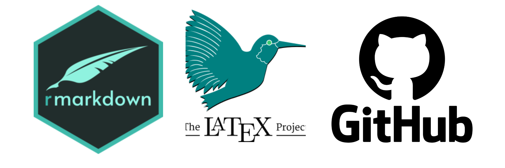

Um (quase) estatístico que atua com Inteligência Artificial no mercado de trabalho
Vítor Pereira
UFSM - CCNE | HartB Group
Sumário
- Objetivo
- Um pouco sobre mim e a HartB
- 3 pilares para o desenvolvimento profissional
- Caminho “Ótimo” e Diferença do Estatístico
- Materiais para Estudo
Pesquisa Operacional :thumbsdown:
Objetivo
Objetivo
- Motivá-los com o futuro como Estatísticos
- Motivá-los com o mercado de Trabalho
- Tentar ajudá-los a trilhar o caminho “ótimo”
- Falar sobre a intersecção entre Estatística e DS
Um pouco sobre mim
Um pouco sobre mim
- Técnico em Informática pelo CTISM e Estatístico (quase)
- Minhas áreas favoritas na estatística são: Probabilidade, Inferência e Regressão
- Quero desenvolver soluções voltadas à Educação, Esporte e Saúde
- Fui bolsista de Desenvolvimento Web, Regressão e Séries Temporais
Um pouco sobre mim
- Trabalhei 4 anos na Recuperadora Roso
- Fui consultor e Diretor de Adm/Fin na Sigma Jr.
- Fui estagiário por 4 meses na CowMed
- Fui bolsista na Pró-Reitoria de Planejamento por 6 meses
- Sou Cientista de Dados Jr. na HartB
Um pouco sobre a HartB
Um pouco sobre a HartB
Inovation as a Service
- Resolver problemas com Inteligência Artificial
- Foco em geração de valor através dos dados e soluções personalizadas
- Diversas equipes especializadas e focadas para a transformação das tomadas decisões
- Especialidade em: Big Data, Internet das Coisas, Análise de Dados e agora em Desenvolvimento de Software
Um pouco sobre a HartB
Um pouco sobre a HartB
Um pouco sobre a HartB
O que aprendi de novo
- Estrutura de projetos em Equipe (CRISP-DM)
- GitLab
- Rutilo
Conceito e criação de API
Banco de Dados não relacional: Solr
Programação Orientada à Objeto
Arquitetura Limpa e Código Limpo
3 pilares para o desenvolvimento profissional
3 pilares para o desenvolvimento profissional
- Pilar 1: Sempre faça um pouco a mais (novo ou melhor)
- Pilar 2: “Se pode ser automatizado, deve ser automatizado!”
- Pilar 3: Network
Pilares
Pilar 1
Sempre faça um pouco a mais
Pilar 2
Se pode ser automatizado, deve ser automatizado

Pilar 3
Network
O Pilar 3 é naturalmente conquistado desenvolvendo os Pilares 1 e 2
Projetos realizados com capricho chamam a atenção das Pessoas
Conexão com as pessoas é a melhor forma de mostrar o seu desempenho
Estatístico vs Cientista da Computação
Estatístico vs Cientista da Computação
- Conhecimento da teoria e suposições dos modelos
- Saber as implicações das violações das suposições e transformações dos modelos
- Geração de insights e geração de valores com os dados com rigor científico
- Conhecimento profundo de análise de dados desde descritiva até DL
- Cientistas da Computação tem sido atraídos por Engenharia de Machine Learning e MLOPS
Estatístico vs Cientista da Computação

Caminho “Ótimo”
Caminho “Ótimo”
- Em R:
- Projeto com Análise Descritiva apenas;
- Projeto com modelos simples de Machine Learning (Regressão Logística);
- Projeto com modelos mais complexos (Random Forest e XGBoost).
- Em Python:
- Refazer o Projeto do modelo simples;
- Refazer o Projeto do modelo complexo;
- Projeto com Web Scraping para Tratamento de dados.
“Falar é fácil, me mostre os códigos cursos”
- Linus Torvalds, criador do Kernel Linux e Git
Cursos para Aprimoramento
Outros materiais
Básico:
Intermediário:
Avançado
Reforçando a base
O poder dos dados é atingir o seu público para impactar mais pessoas!
Obrigado!
Qualquer dúvida estou disponível tanto aqui quanto nas redes sociais.
Ingresso no mercado de trabalho - SAE 2022 - Vítor Pereira